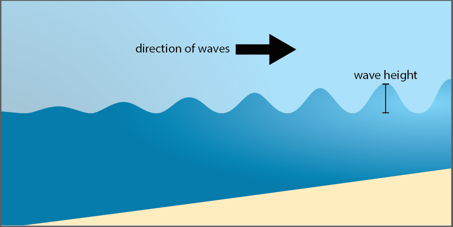
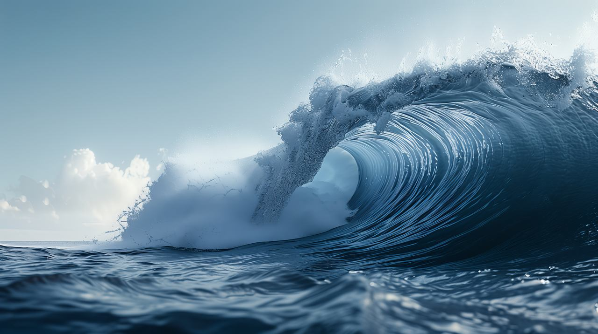
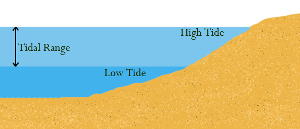
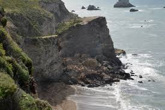
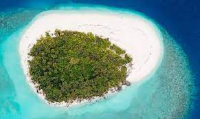

DETAILED DISCUSSIONS ON MARINE AND COASTAL PROCESSES
Waves
 
-Waves are water oscillations caused by
wind that transfer energy across the ocean
Tides

-Are the regular rise and fall of sea levels caused by the gravitational pull of
the moon and the sun. -Tides influence water levels, affect erosion
and sediment deposition, and impact coastal ecosystems and human activities.
Sea Level Change

- Refers to the variations in the average level of the sea, caused by
factors such as melting ice caps, thermal expansion of seawater, and land
subsidence or uplift. these changes can lead to coastal erosion, flooding, and changes in habitats and ecosystems.
Storm Surge

-A storm surge is an abnormal rise in sea level caused by strong winds
and low atmospheric pressure during storms. storm surges can lead to
significant flooding, erosion, and damage to coastal ecosystems.
Crustal Movement

- Refers to the shifting of the Earth's crust due to tectonic forces, which can cause
the land to rise or sink. these movements can lead to changes in sea level
relative to the land, affecting coastal landforms, erosion patterns, and ocean habitats.
EFFECTS OF MARINE AND COASTAL PROCESSESS
Coastal Erosion

Coastal erosion is a continuous process where the relentless forces of waves, currents, and
tides gradually wear away and carry away material from the coastline. This erosion
can lead to the loss of land, changes in the shape of beaches, cliffs, and other
coastal landforms, and even threaten coastal infrastructure.
Salt intrusion

Saltwater intrusion occurs when saltwater from the ocean seeps into freshwater aquifers or
surface water systems. This intrusion is primarily driven by rising sea levels, which increase
the pressure of saltwater pushing inland. As a result, freshwater sources become
contaminated with salt, making them unusable for drinking, agriculture, and other purposes
Submersion

Submersion is the process where land or coastal areas are gradually submerged or covered by water.
This often occurs due to rising sea levels, caused by factors such as climate change and
glacial melting. As sea levels rise, low-lying areas, beaches, and coastal ecosystems become
increasingly vulnerable to inundation, leading to significant environmental and economic impacts.